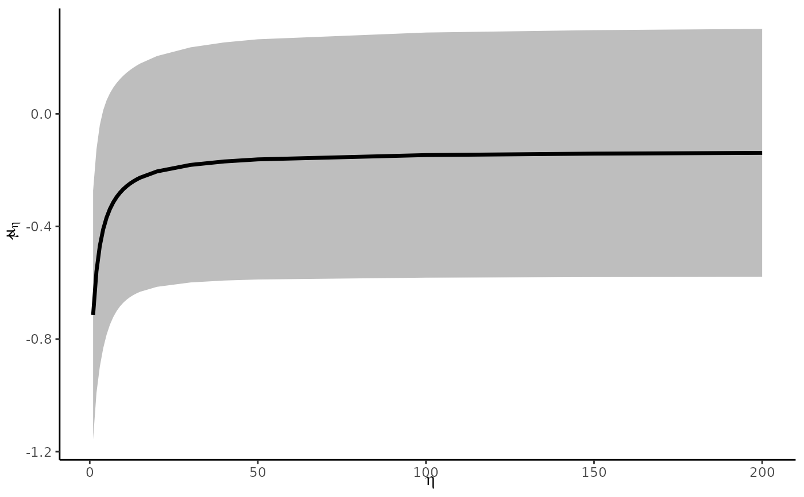

For a chosen ratio of publication probabilities, selection_ratio, estimates
a publication bias-corrected pooled point estimate and confidence interval
per Mathur and VanderWeele (2020)
. Model options include
fixed-effects (a.k.a. "common-effect"), robust independent, and robust
clustered specifications.
Usage
pubbias_meta(
yi,
vi,
sei,
cluster = 1:length(yi),
selection_ratio,
selection_tails = 1,
model_type = "robust",
favor_positive = TRUE,
alpha_select = 0.05,
ci_level = 0.95,
small = TRUE
)
corrected_meta(
yi,
vi,
eta,
clustervar = 1:length(yi),
model,
selection.tails = 1,
favor.positive,
alpha.select = 0.05,
CI.level = 0.95,
small = TRUE
)Arguments
- yi
A vector of point estimates to be meta-analyzed.
- vi
A vector of estimated variances (i.e., squared standard errors) for the point estimates.
- sei
A vector of estimated standard errors for the point estimates. (Only one of
viorseineeds to be specified).- cluster
Vector of the same length as the number of rows in the data, indicating which cluster each study should be considered part of (defaults to treating studies as independent; i.e., each study is in its own cluster).
- selection_ratio
Ratio by which publication bias favors affirmative studies (i.e., studies with p-values less than
alpha_selectand estimates in the direction indicated byfavor_positive).- selection_tails
1 (for one-tailed selection, recommended for its conservatism) or 2 (for two-tailed selection).
- model_type
"fixed" for fixed-effects (a.k.a. "common-effect") or "robust" for robust random-effects.
- favor_positive
TRUEif publication bias are assumed to favor significant positive estimates;FALSEif assumed to favor significant negative estimates.- alpha_select
Alpha level at which an estimate's probability of being favored by publication bias is assumed to change (i.e., the threshold at which study investigators, journal editors, etc., consider an estimate to be significant).
- ci_level
Confidence interval level (as proportion) for the corrected point estimate. (The alpha level for inference on the corrected point estimate will be calculated from
ci_level.)- small
Should inference allow for a small meta-analysis? We recommend always using
TRUE.- eta
(deprecated) see selection_ratio
- clustervar
(deprecated) see cluster
- model
(deprecated) see model_type
- selection.tails
(deprecated) see selection_tails
- favor.positive
(deprecated) see favor_positive
- alpha.select
(deprecated) see alpha_select
- CI.level
(deprecated) see ci_level
Value
An object of class metabias::metabias(), a list containing:
- data
A tibble with one row per study and the columns
yi,yif,vi,affirm,cluster.- values
A list with the elements
selection_ratio,selection_tails,model_type,favor_positive,alpha_select,ci_level,small,k,k_affirmative,k_nonaffirmative.- stats
A tibble with the columns
estimate,se,ci_lower,ci_upper,p_value.- fit
A list of fitted models, if any.
Details
The selection_ratio represents the number of times more likely
affirmative studies (i.e., those with a "statistically significant" and
positive estimate) are to be published than nonaffirmative studies (i.e.,
those with a "nonsignificant" or negative estimate).
If favor_positive is FALSE, such that publication bias is assumed to
favor negative rather than positive estimates, the signs of yi will be
reversed prior to performing analyses. The corrected estimate will be
reported based on the recoded signs rather than the original sign
convention.
References
Mathur MB, VanderWeele TJ (2020). “Sensitivity analysis for publication bias in meta-analyses.” Journal of the Royal Statistical Society: Series C (Applied Statistics), 69(5), 1091--1119.
Examples
# calculate effect sizes from example dataset in metafor
require(metafor)
#> Loading required package: metafor
#> Loading required package: Matrix
#> Loading required package: metadat
#>
#> Loading the 'metafor' package (version 3.8-1). For an
#> introduction to the package please type: help(metafor)
dat <- metafor::escalc(measure = "RR", ai = tpos, bi = tneg, ci = cpos,
di = cneg, data = dat.bcg)
# first fit fixed-effects model without any bias correction
# since the point estimate is negative here, we'll assume publication bias
# favors negative log-RRs rather than positive ones
metafor::rma(yi, vi, data = dat, method = "FE")
#>
#> Fixed-Effects Model (k = 13)
#>
#> I^2 (total heterogeneity / total variability): 92.12%
#> H^2 (total variability / sampling variability): 12.69
#>
#> Test for Heterogeneity:
#> Q(df = 12) = 152.2330, p-val < .0001
#>
#> Model Results:
#>
#> estimate se zval pval ci.lb ci.ub
#> -0.4303 0.0405 -10.6247 <.0001 -0.5097 -0.3509 ***
#>
#> ---
#> Signif. codes: 0 ‘***’ 0.001 ‘**’ 0.01 ‘*’ 0.05 ‘.’ 0.1 ‘ ’ 1
#>
# warmup
# note that passing selection_ratio = 1 (no publication bias) yields the naive
# point estimate from rma above, which makes sense
pubbias_meta(yi = dat$yi,
vi = dat$vi,
selection_ratio = 1,
model_type = "fixed",
favor_positive = FALSE)
#> List of 4
#> $ data : tibble [13 × 5] (S3: tbl_df/tbl/data.frame)
#> ..$ yi : num [1:13] -0.889 -1.585 -1.348 -1.442 -0.218 ...
#> .. ..- attr(*, "ni")= int [1:13] 262 609 451 26465 10877 2992 3174 176782 14776 3381 ...
#> .. ..- attr(*, "measure")= chr "RR"
#> ..$ yif : num [1:13] 0.889 1.585 1.348 1.442 0.218 ...
#> .. ..- attr(*, "ni")= int [1:13] 262 609 451 26465 10877 2992 3174 176782 14776 3381 ...
#> .. ..- attr(*, "measure")= chr "RR"
#> ..$ vi : num [1:13] 0.3256 0.1946 0.4154 0.02 0.0512 ...
#> ..$ affirm : logi [1:13] FALSE TRUE TRUE TRUE FALSE TRUE ...
#> ..$ cluster: int [1:13] 1 2 3 4 5 6 7 8 9 10 ...
#> $ values:List of 10
#> ..$ selection_ratio : num 1
#> ..$ selection_tails : num 1
#> ..$ model_type : chr "fixed"
#> ..$ favor_positive : logi FALSE
#> ..$ alpha_select : num 0.05
#> ..$ ci_level : num 0.95
#> ..$ small : logi TRUE
#> ..$ k : int 13
#> ..$ k_affirmative : int 8
#> ..$ k_nonaffirmative: int 5
#> $ stats : tibble [1 × 5] (S3: tbl_df/tbl/data.frame)
#> ..$ estimate: num -0.43
#> ..$ se : num 0.0405
#> ..$ ci_lower: num -0.519
#> ..$ ci_upper: num -0.342
#> ..$ p_value : num 1.85e-07
#> $ fits : list()
#> - attr(*, "class")= chr [1:2] "metabias" "list"
# assume a known selection ratio of 5
# i.e., affirmative results are 5x more likely to be published than
# nonaffirmative ones
pubbias_meta(yi = dat$yi,
vi = dat$vi,
selection_ratio = 5,
model_type = "fixed",
favor_positive = FALSE)
#> List of 4
#> $ data : tibble [13 × 5] (S3: tbl_df/tbl/data.frame)
#> ..$ yi : num [1:13] -0.889 -1.585 -1.348 -1.442 -0.218 ...
#> .. ..- attr(*, "ni")= int [1:13] 262 609 451 26465 10877 2992 3174 176782 14776 3381 ...
#> .. ..- attr(*, "measure")= chr "RR"
#> ..$ yif : num [1:13] 0.889 1.585 1.348 1.442 0.218 ...
#> .. ..- attr(*, "ni")= int [1:13] 262 609 451 26465 10877 2992 3174 176782 14776 3381 ...
#> .. ..- attr(*, "measure")= chr "RR"
#> ..$ vi : num [1:13] 0.3256 0.1946 0.4154 0.02 0.0512 ...
#> ..$ affirm : logi [1:13] FALSE TRUE TRUE TRUE FALSE TRUE ...
#> ..$ cluster: int [1:13] 1 2 3 4 5 6 7 8 9 10 ...
#> $ values:List of 10
#> ..$ selection_ratio : num 5
#> ..$ selection_tails : num 1
#> ..$ model_type : chr "fixed"
#> ..$ favor_positive : logi FALSE
#> ..$ alpha_select : num 0.05
#> ..$ ci_level : num 0.95
#> ..$ small : logi TRUE
#> ..$ k : int 13
#> ..$ k_affirmative : int 8
#> ..$ k_nonaffirmative: int 5
#> $ stats : tibble [1 × 5] (S3: tbl_df/tbl/data.frame)
#> ..$ estimate: num -0.156
#> ..$ se : num 0.0491
#> ..$ ci_lower: num -0.263
#> ..$ ci_upper: num -0.0485
#> ..$ p_value : num 0.00814
#> $ fits : list()
#> - attr(*, "class")= chr [1:2] "metabias" "list"
# same selection ratio, but now account for heterogeneity and clustering via
# robust specification
pubbias_meta(yi = dat$yi,
vi = dat$vi,
cluster = dat$author,
selection_ratio = 5,
model_type = "robust",
favor_positive = FALSE)
#> List of 4
#> $ data : tibble [13 × 5] (S3: tbl_df/tbl/data.frame)
#> ..$ yi : num [1:13] -0.889 -1.585 -1.348 -1.442 -0.218 ...
#> .. ..- attr(*, "ni")= int [1:13] 262 609 451 26465 10877 2992 3174 176782 14776 3381 ...
#> .. ..- attr(*, "measure")= chr "RR"
#> ..$ yif : num [1:13] 0.889 1.585 1.348 1.442 0.218 ...
#> .. ..- attr(*, "ni")= int [1:13] 262 609 451 26465 10877 2992 3174 176782 14776 3381 ...
#> .. ..- attr(*, "measure")= chr "RR"
#> ..$ vi : num [1:13] 0.3256 0.1946 0.4154 0.02 0.0512 ...
#> ..$ affirm : logi [1:13] FALSE TRUE TRUE TRUE FALSE TRUE ...
#> ..$ cluster: chr [1:13] "Aronson" "Ferguson & Simes" "Rosenthal et al" "Hart & Sutherland" ...
#> $ values:List of 10
#> ..$ selection_ratio : num 5
#> ..$ selection_tails : num 1
#> ..$ model_type : chr "robust"
#> ..$ favor_positive : logi FALSE
#> ..$ alpha_select : num 0.05
#> ..$ ci_level : num 0.95
#> ..$ small : logi TRUE
#> ..$ k : int 13
#> ..$ k_affirmative : int 8
#> ..$ k_nonaffirmative: int 5
#> $ stats :'data.frame': 1 obs. of 5 variables:
#> ..$ estimate: num -0.369
#> ..$ se : num 0.145
#> ..$ ci_lower: num -0.785
#> ..$ ci_upper: num 0.0477
#> ..$ p_value : num 0.0691
#> $ fits :List of 1
#> ..$ robust:List of 25
#> .. ..$ data.full :'data.frame': 13 obs. of 14 variables:
#> .. .. ..$ effect.size : num [1:13] -0.8893 -0.4694 0.4459 -0.3394 -0.0173 ...
#> .. .. ..$ var.eff.size : num [1:13] 0.3256 0.0564 0.5325 0.0124 0.0714 ...
#> .. .. ..$ userweights : num [1:13] 7.83 2.71 5.91 3.07 13 ...
#> .. .. ..$ study : num [1:13] 1 2 3 4 4 5 6 7 8 8 ...
#> .. .. ..$ k : int [1:13] 1 1 1 2 2 1 1 1 2 2 ...
#> .. .. ..$ avg.var.eff.size: num [1:13] 0.3256 0.0564 0.5325 0.0419 0.0419 ...
#> .. .. ..$ sd.eff.size : num [1:13] 0.571 0.238 0.73 0.111 0.267 ...
#> .. .. ..$ weights : num [1:13] 3.07 17.72 1.88 11.93 11.93 ...
#> .. .. ..$ pred : num [1:13, 1] -0.422 -0.422 -0.422 -0.422 -0.422 ...
#> .. .. .. ..- attr(*, "dimnames")=List of 2
#> .. .. .. .. ..$ : chr [1:13] "1" "9" "12" "11" ...
#> .. .. .. .. ..$ : NULL
#> .. .. ..$ e : num [1:13, 1] -0.467 -0.0471 0.8682 0.083 0.405 ...
#> .. .. .. ..- attr(*, "dimnames")=List of 2
#> .. .. .. .. ..$ : chr [1:13] "1" "9" "12" "11" ...
#> .. .. .. .. ..$ : NULL
#> .. .. ..$ r.weights : num [1:13] 7.83 2.71 5.91 3.07 13 ...
#> .. .. ..$ pred.r : num [1:13, 1] -0.369 -0.369 -0.369 -0.369 -0.369 ...
#> .. .. .. ..- attr(*, "dimnames")=List of 2
#> .. .. .. .. ..$ : chr [1:13] "1" "9" "12" "11" ...
#> .. .. .. .. ..$ : NULL
#> .. .. ..$ e.r : num [1:13] -0.5207 -0.1008 0.8145 0.0293 0.3513 ...
#> .. .. ..$ ImH : num [1:13, 1:13] 0.897 -0.103 -0.103 -0.103 -0.103 ...
#> .. .. .. ..- attr(*, "dimnames")=List of 2
#> .. .. .. .. ..$ : chr [1:13] "1" "9" "12" "11" ...
#> .. .. .. .. ..$ : NULL
#> .. ..$ X.full :'data.frame': 13 obs. of 2 variables:
#> .. .. ..$ study : num [1:13] 1 2 3 4 4 5 6 7 8 8 ...
#> .. .. ..$ X.Intercept.: num [1:13] 1 1 1 1 1 1 1 1 1 1 ...
#> .. ..$ reg_table :'data.frame': 1 obs. of 9 variables:
#> .. .. ..$ labels: chr "X.Intercept."
#> .. .. ..$ b.r : num -0.369
#> .. .. ..$ SE : num 0.145
#> .. .. ..$ t : num -2.54
#> .. .. ..$ dfs : num 3.7
#> .. .. ..$ prob : num 0.0691
#> .. .. ..$ CI.L : num -0.785
#> .. .. ..$ CI.U : num 0.0477
#> .. .. ..$ sig : chr "*"
#> .. ..$ mod_label : chr [1:2] "RVE: User Specified Weights" "with Small-Sample Corrections"
#> .. ..$ mod_notice : chr "Note: If df < 4, do not trust the results"
#> .. ..$ modelweights : chr "CORR"
#> .. ..$ mod_info :List of 4
#> .. .. ..$ k: int [1:11] 1 1 1 2 1 1 1 2 1 1 ...
#> .. .. ..$ N: num 11
#> .. .. ..$ p: num 0
#> .. .. ..$ M: int 13
#> .. ..$ user_weighting: logi TRUE
#> .. ..$ ml : language yi ~ 1
#> .. ..$ cl : language robumeta::robu(formula = yi ~ 1, data = dat, studynum = cluster, var.eff.size = vi, userweights = weights/(v| __truncated__
#> .. ..$ N : num 11
#> .. ..$ M : int 13
#> .. ..$ k : int [1:11] 1 1 1 2 1 1 1 2 1 1 ...
#> .. ..$ k_list :List of 11
#> .. .. ..$ : int 1
#> .. .. ..$ : int 1
#> .. .. ..$ : int 1
#> .. .. ..$ : int 2
#> .. .. ..$ : int 1
#> .. .. ..$ : int 1
#> .. .. ..$ : int 1
#> .. .. ..$ : int 2
#> .. .. ..$ : int 1
#> .. .. ..$ : int 1
#> .. .. ..$ : int 1
#> .. ..$ p : num 0
#> .. ..$ X :List of 11
#> .. .. ..$ 1 : num [1, 1] 1
#> .. .. ..$ 2 : num [1, 1] 1
#> .. .. ..$ 3 : num [1, 1] 1
#> .. .. ..$ 4 : num [1:2, 1] 1 1
#> .. .. ..$ 5 : num [1, 1] 1
#> .. .. ..$ 6 : num [1, 1] 1
#> .. .. ..$ 7 : num [1, 1] 1
#> .. .. ..$ 8 : num [1:2, 1] 1 1
#> .. .. ..$ 9 : num [1, 1] 1
#> .. .. ..$ 10: num [1, 1] 1
#> .. .. ..$ 11: num [1, 1] 1
#> .. ..$ y :List of 11
#> .. .. ..$ 1 : num [1, 1] -0.889
#> .. .. ..$ 2 : num [1, 1] -0.469
#> .. .. ..$ 3 : num [1, 1] 0.446
#> .. .. ..$ 4 : num [1:2, 1] -0.3394 -0.0173
#> .. .. ..$ 5 : num [1, 1] -1.59
#> .. .. ..$ 6 : num [1, 1] -0.218
#> .. .. ..$ 7 : num [1, 1] -1.44
#> .. .. ..$ 8 : num [1:2, 1] -1.35 -1.37
#> .. .. ..$ 9 : num [1, 1] -0.786
#> .. .. ..$ 10: num [1, 1] 0.012
#> .. .. ..$ 11: num [1, 1] -1.62
#> .. .. ..- attr(*, "dim")= int 11
#> .. .. ..- attr(*, "dimnames")=List of 1
#> .. .. .. ..$ data.full$study: chr [1:11] "1" "2" "3" "4" ...
#> .. .. ..- attr(*, "call")= language by.default(data = data.full$effect.size, INDICES = data.full$study, FUN = function(x) matrix(x))
#> .. .. ..- attr(*, "class")= chr "by"
#> .. ..$ Xreg : num [1:13, 1] 1 1 1 1 1 1 1 1 1 1 ...
#> .. .. ..- attr(*, "dimnames")=List of 2
#> .. .. .. ..$ : chr [1:13] "1" "9" "12" "11" ...
#> .. .. .. ..$ : chr "X.Intercept."
#> .. ..$ b.r : num [1, 1] -0.369
#> .. ..$ VR.r : num [1, 1] 0.0211
#> .. ..$ dfs : num 3.7
#> .. ..$ small : logi TRUE
#> .. ..$ data : tibble [13 × 5] (S3: tbl_df/tbl/data.frame)
#> .. .. ..$ yi : num [1:13] -0.889 -1.585 -1.348 -1.442 -0.218 ...
#> .. .. .. ..- attr(*, "ni")= int [1:13] 262 609 451 26465 10877 2992 3174 176782 14776 3381 ...
#> .. .. .. ..- attr(*, "measure")= chr "RR"
#> .. .. ..$ yif : num [1:13] 0.889 1.585 1.348 1.442 0.218 ...
#> .. .. .. ..- attr(*, "ni")= int [1:13] 262 609 451 26465 10877 2992 3174 176782 14776 3381 ...
#> .. .. .. ..- attr(*, "measure")= chr "RR"
#> .. .. ..$ vi : num [1:13] 0.3256 0.1946 0.4154 0.02 0.0512 ...
#> .. .. ..$ affirm : logi [1:13] FALSE TRUE TRUE TRUE FALSE TRUE ...
#> .. .. ..$ cluster: chr [1:13] "Aronson" "Ferguson & Simes" "Rosenthal et al" "Hart & Sutherland" ...
#> .. ..$ labels : chr "X.Intercept."
#> .. ..$ study_orig_id : chr [1:13] "Aronson" "Ferguson & Simes" "Rosenthal et al" "Hart & Sutherland" ...
#> .. ..- attr(*, "class")= chr "robu"
#> - attr(*, "class")= chr [1:2] "metabias" "list"
##### Make sensitivity plot as in Mathur & VanderWeele (2020) #####
# range of parameters to try (more dense at the very small ones)
selection_ratios <- c(200, 150, 100, 50, 40, 30, 20, seq(15, 1))
# compute estimate for each value of selection_ratio
estimates <- lapply(selection_ratios, function(e) {
pubbias_meta(yi = dat$yi, vi = dat$vi, cluster = dat$author,
selection_ratio = e, model_type = "robust",
favor_positive = FALSE)$stats
})
estimates <- dplyr::bind_rows(estimates)
estimates$selection_ratio <- selection_ratios
require(ggplot2)
#> Loading required package: ggplot2
ggplot(estimates, aes(x = selection_ratio, y = estimate)) +
geom_ribbon(aes(ymin = ci_lower, ymax = ci_upper), fill = "gray") +
geom_line(lwd = 1.2) +
labs(x = bquote(eta), y = bquote(hat(mu)[eta])) +
theme_classic()
#> Warning: Using `size` aesthetic for lines was deprecated in ggplot2 3.4.0.
#> ℹ Please use `linewidth` instead.
